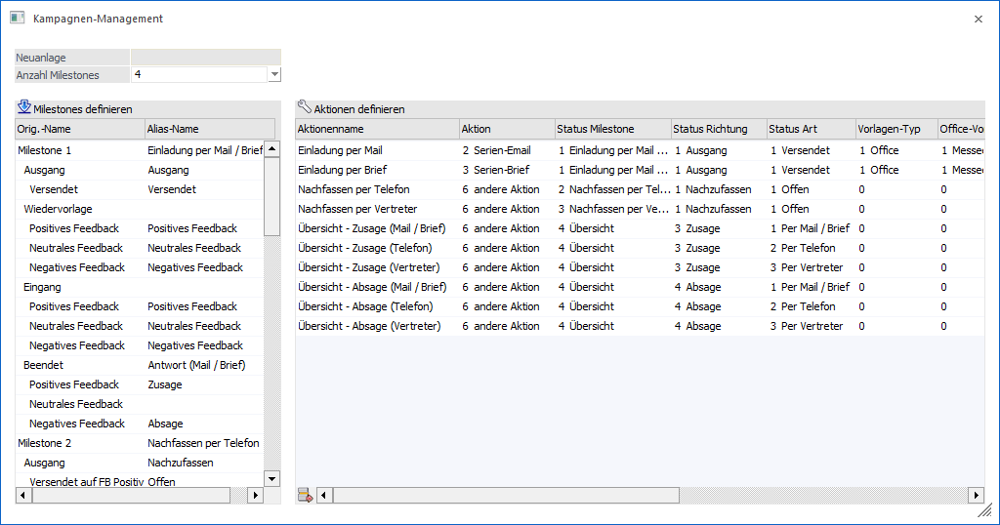
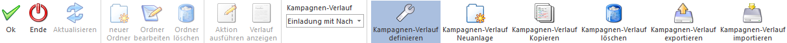

Im Fenster "Kampagnen-Management" kann mit Hilfe des Buttons "Kampagnen-Verlauf definieren" ein bestehender Verlauf editiert oder ein neuer Verlauf kreiert werden.

Ø Neuanlage
Wenn der Button "Kampagnen-Verlauf Neuanlage" aktiviert wurde, dann kann an dieser Stelle der Name des neuen Verlaufs definiert werden.
Ø Anzahl Milestones
An dieser Stelle wird angegeben, wie viele Haupt-Abarbeitungsschritte der Verlauf aufweisen soll. Jeder Milestone (maximal 9) gliedert sich hierbei in weitere Unterbereiche (1. Ebene = Richtung) und Unterschritte (2. Ebene = Art) auf.
Ø Milestones definieren
In der Tabelle kann dem Original-Namen ein Alias-Name zugewiesen werden. Dieser wird dann im Kampagnen-Management angezeigt.
Hinweis
Wenn das Feld "Alias-Name" leer gelassen wird, dann wird der entsprechende Unterbereich (samt Unterschritte) oder die Unterschritte im Kampagnen-Management nicht angezeigt. Hierüber können individuelle Milestones geschaffen werden.
Tabelle "Aktionen definieren"
In der Tabelle werden die Aktionen für den Button Aktion ausführen" definiert. Das Ausführen einer Aktion kann hierbei folgende Auswirkungen haben:
ü Die selektierten Adressen werden in einen neuen Schritt verschoben (immer).
ü Die selektierten Adressen werden an das Postausgangsbuch übergeben (optional).
Ø Aktionenname
Der Aktionsname kann beliebig vergeben werden.
Ø Aktion
Folgende Aktionen stehen zur Verfügung:
ü 1 - Einzel-Email => Übergabe an das Postausgangsbuch
ü 2 - Serien-Email => Übergabe an das Postausgangsbuch
ü 3 - Serien-Brief => Übergabe an das Postausgangsbuch
ü 4 - Serien-Fax => Übergabe an das Postausgangsbuch
ü 5 - Anruf
ü 6 - andere Aktion
Ø Status Milestone
Hier wird der zu verwendeten Milestone ausgewählt, in welchen die Adressen verschoben werden sollen.
Ø Status Richtung
Unter "Status Richtung" wird die 1. Ebenen des Milestones ausgewählt, in welchen die Adressen verschoben werden sollen.
Ø Status Art
Unter "Status Art" wird die 2. Ebenen des Milestones ausgewählt, in welchen die Adressen verschoben werden sollen.
Ø Vorlagen-Typ
Hier wird der Typ bestimmt, welcher im Postausgangsbuch verwendet werden soll. Es kann zwischen Office, Textbaustein oder Datei gewählt werden.
Hinweis
Diese Option ist nur bei den Aktionen "Einzel-Email", "Serien-Email", "Serien-Brief" und "Serien-Fax" verfügbar.
Ø Office-Vorlage
Wenn zuvor der "Vorlagen-Typ" Office ausgewählt wurde, kann hier die jeweilige Office-Vorlage hinterlegt werden, welche automatisch im Postausgangsbuch geladen wird.
Ø Office-Seriendruckfeld
Wenn zuvor der "Vorlagen-Typ" Office ausgewählt wurde, kann hier die jeweilige Office-Seriendruckfeld-Vorlage hinterlegt werden, welche automatisch im Postausgangsbuch geladen wird.
Ø Textbaustein
Wenn zuvor der "Vorlagen-Typ" Textbaustein ausgewählt wurde, kann hier der jeweilige Textbaustein hinterlegt werden, welcher automatisch im Postausgangsbuch geladen wird.
Ø Datei
Wenn zuvor der "Vorlagen-Typ" Datei ausgewählt wurde, kann hier die Datei hinterlegt werden, welche automatisch im Postausgangsbuch geladen wird.
Ø CRM-Aktion
Unter "CRM-Aktion" kann eine CRM-Aktion hinterlegt werden, welche beim Ausführen des Schrittes geschrieben werden soll.
Ø CRM-Aktionsname
Unter "CRM-Aktionsname" wird der Name der zuvor ausgewählten CRM-Aktion angezeigt.
Tabellenbuttons

Ø Zeile entfernen
Die markierte Aktion wird entfernt.
Ø Ausgabe Excel
Durch Anwahl des Buttons "Ausgabe Excel" wird der Inhalt der Tabelle an Microsoft Excel übergeben.
Ø Tabelleneinstellungen speichern
Die Spalten einer Tabelle können grundsätzlich an beliebige Positionen verschoben, bzw. in der Breite entsprechend angepasst werden. Durch Anwahl des Buttons "Tabelleneinstellungen speichern" werden die Einstellungen benutzerspezifisch gespeichert und bei dem nächsten Aufruf des Programmpunktes wieder vorgeschlagen.
Ø Gesamteinstellungen speichern
Im Gegensatz zu "Tabelleneinstellungen speichern" können mit "Gesamteinstellungen speichern" mehrere Tabellenaufbauten gespeichert und nach Wunsch geladen werden. Zusätzlich werden Sonderfunktionen der Tabelle (z.B. "Spalte gruppieren") ebenfalls bei der Speicherung bedacht.
Buttons

Ø Ok
Durch Anwahl des Buttons "Ok" bzw. der Taste F5 wird der Verlauf gespeichert.
Ø Ende
Durch Anwahl des Buttons "Ende" bzw. ESC wird das Fenster "Kampagnen-Management" geschlossen und alle nicht gespeicherten Eingaben verworfen.
Ø Aktualisieren (nicht bei "Kampagnen-Verlauf definieren")
Mit Hilfe des Buttons "Aktualisieren" wird der Bereich "Milestones" und die Tabelle "Adressdaten" mit den aktuellen Informationen neu geladen.
Ø neuer Ordner (nicht bei "Kampagnen-Verlauf definieren")
Durch Anwählen dieses Buttons kann ein neuer Ordner angelegt werden. Dabei wird ein eigenes Feld zur Eingabe der Bezeichnung des Ordners eingeblendet. Ebenfalls kann in diesem Bereich festgelegt werden, ob es sich um einen persönlichen oder öffentlichen Ordner handelt.
Ø Ordner bearbeiten (nicht bei "Kampagnen-Verlauf definieren")
Befindet sich der Fokus auf einer Ordner-Zeile, so kann durch Anwahl dieses Buttons die Bezeichnung, sowie die Einstellung "persönlich" bearbeitet werden. Das Beenden der Bearbeitung (ohne Speicherung) erfolgt, indem der Button "Ordner bearbeiten" erneut angewählt wird. Eine Speicherung wird durch Anwahl des Buttons "Ok" bzw. der Taste F5 ausgelöst.
Ø Ordner löschen (nicht bei "Kampagnen-Verlauf definieren")
Durch Anwählen dieses Buttons wird, nach Bestätigung einer Sicherheitsabfrage, jener Ordner gelöscht, auf welchen der Fokus gesetzt ist. Ordner können nur gelöscht werden, wenn es darunter keine Unterordner gibt bzw. keine Kampagnen darin enthalten sind.
Ø Aktion ausführen (nicht bei "Kampagnen-Verlauf definieren")
Mit dem Button "Aktion ausführen" kann einer, der zuvor unter "Kampagnen-Verlauf definieren" hinterlegten Aktionen, ausgeführt werden.
Hinweis
Es werden nur Aktionen dargestellt, welche Adressen in einen folgenden Schritt verschieben würden. Ein Verschieben in einen Vorschritt ist nur per Drag & Drop möglich.
Ø Verlauf anzeigen (nicht bei "Kampagnen-Verlauf definieren")
Mit Hilfe des Buttons "Verlauf anzeigen" wird die Verlauf-Tabelle angezeigt. In dieser wird aufgelistet, welche Adresse, wann, wie und wohin verschoben wurde.
Ø Kampagnen-Verlauf
Aus der Auswahlbox "Kampagnen-Verlauf" kann ein zuvor angelegter Verlauf ausgewählt werden. Mit diesem werden die "Aktionen" und die "Milestones" gesteuert.
Hinweis
Wurde bereit mit der gewählten Kampagne im Kampagnen-Management gearbeitet, so wird der entsprechende Kampagnen-Verlauf automatisch geladen.
Achtung
Jede Kampagne kann nur 1x im Kampagnen-Management sinnvoll genutzt werden. Von dem Umschalten des Verlaufs bei einer bereits be- bzw. genutzten Kampagne wird abgeraten.
Ø Kampagnen-Verlauf definieren
Mit Hilfe des Buttons "Kampagnen-Verlauf definieren" wird die Definition des Kampagnen-Verlaufs beendet und getätigte Änderungen nicht gespeichert.
Ø Kampagnen-Verlauf Neuanlage (nur bei "Kampagnen-Verlauf definieren")
Durch Anwahl des Buttons "Kampagnen-Verlauf Neuanlage" kann ein neuer Kampagnen-Verlauf angelegt werden.
Ø Kampagnen-Verlauf kopieren (nur bei "Kampagnen-Verlauf definieren")
Mit dem Button "Kampagnen-Verlauf kopieren" kann ein Kampagnen-Verlauf kopiert werden.
Ø Kampagnen-Verlauf löschen (nur bei "Kampagnen-Verlauf definieren")
Mit Hilfe des Buttons "Kampagnen-Verlauf löschen" kann ein Kampagnen-Verlauf gelöscht werden.
Ø Kampagnen-Verlauf exportieren (nur bei "Kampagnen-Verlauf definieren")
Durch Anwahl des Buttons "Kampagnen-Verlauf exportieren" kann ein Kampagnen-Verlauf exportiert werden.
Ø Kampagnen-Verlauf importieren (nur bei "Kampagnen-Verlauf definieren")
Mit dem Button "Kampagnen-Verlauf importieren" kann ein Kampagnen-Verlauf importiert werden.